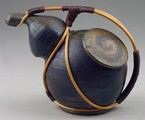

|  | Richard Bresnahan American, Teapot 1995 Stoneware with natural glazes 6-3/4 inches high, 8 inches long 96.25.2a,b |
Resources on the Web
http://www.users.csbsju.edu/~physplnt/joehall.htmlArt History, No text, exterior photos of Bresnahan's studio at St. John's
http://www.csbsju.edu/pottery/
Art History and Process, High school reading level, St. John's website about Bresnahan
http://starbulletin.com/98/02/05/features/story4.html
Art History and Process, High school reading level, Honolulu Star Article with images of the master and his work about Nakazato Takashi, Bresnahan's teacher
http://www.teahyakka.com/Elayout.html
Cultural Anthropology, High reading level, The best organized tea ceremony page, most attractive aesthetically, Includes article THE JAPANESE TEA CEREMONY: TEA FOR ALL NATIONS by Brother Joseph Keenan, Ph.D., FSC, information covers philosophy, aesthetic, and cultural value of the Tea Ceremony, includes virtual tea room in Quick time VR
Resources in Print
Bresnahan, Richard. "First Fire." Studio Potter 24, no. 2 (June 1996): 50-53.
Cort, Louise Allison and Malcolm Wright. "The Peters Valley Woodfire Conference." Studio Potter 12, no. 2 (June 1984): 81-88.
Lopez, Barry. "Before the Temple of Fire." Harper's Magazine (January 1998): 35-50.
Welch, Matthew. "Out of the Fire." Arts Magazine (April 1996): 8- 9.
Search ArtsConnectEd by keyword.
Search the ArtsConnectEd database, a joint project of the Minneapolis Institute of Arts and the Walker Art Center. By choosing one of the words below, you will be searching through the artworks, library records, educational materials, and more.
Japan, ceramic, glaze, potter, kiln, Minnesota, Collegeville, spirit, environment, Bresnahan, tradition, function, vessel, 1996, United States, ceramic, clay, stoneware

Key ideas.
Where does it come from?
What does it look like?
How was it used?
How was it made?
Discussion questions.
Additional resources.
Select another piece.